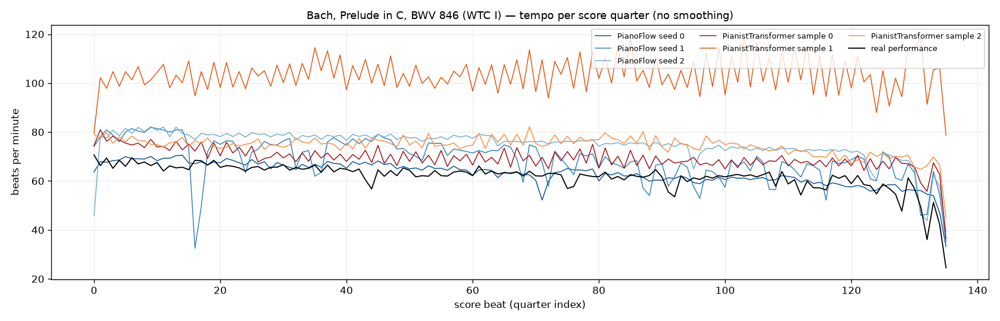
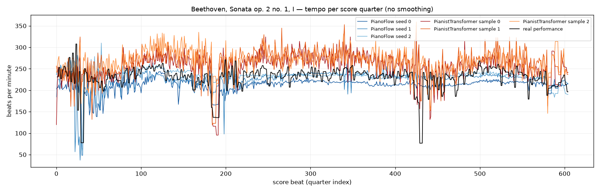
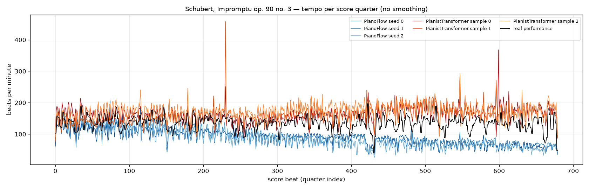
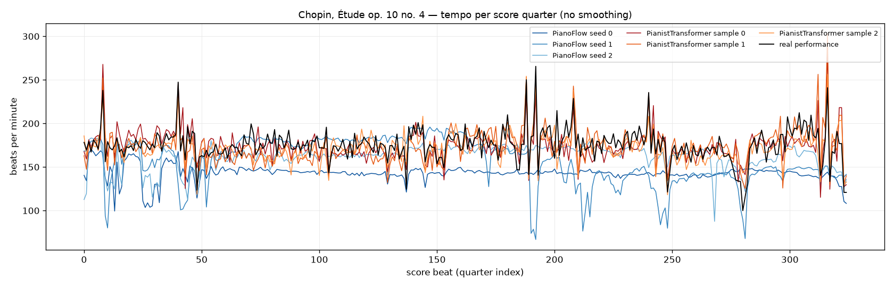
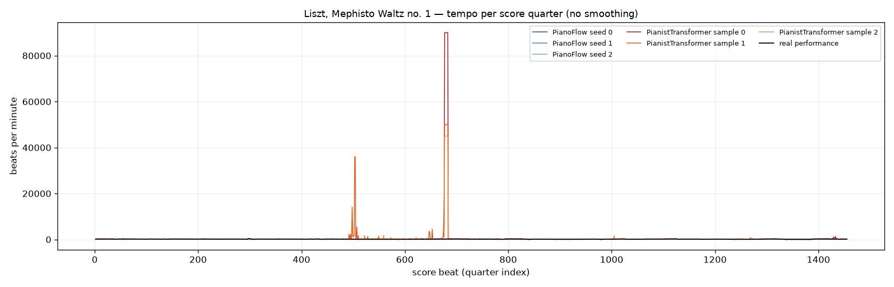

Needs internet: the MIDI players and the soundfont are loaded from a CDN. Serve this directory over HTTP (the players cannot fetch .mid over file://).
Two public score-to-performance renderers on the same five ASAP score MIDIs, beside one real ASAP performance each. PianoFlow (SyMuPe, PianoFlow-base, 24.5 M, flow matching over beat-relative deviations, trained on PianoCoRe-A) keeps the notes one-to-one, writes sustain as lengthened durations, and is steered by the score's tempo marking once our wrapper forwards the score tokens that the released package drops; seed and the number of flow steps are its diversity knobs. PianistTransformer (135 M encoder–decoder, T5Gemma backbone, temperature 1.0 / top-p 0.95) emits the score's pitches in order in absolute time, writes pedal as CC64, runs long pieces in overlapping windows, and drops zero-length duplicate score notes. Each player pairs audio with a synchronised piano roll. The tempo plot shows beats per minute per score quarter for the three renders of each model and the real performance.
| piece | notes (score / PT input) | score MIDI (s) | PianoFlow (s) ×3 | PianistTransformer (s) ×3 | real (s) | PF vel mean / std | PT vel mean / std | real vel mean / std |
|---|---|---|---|---|---|---|---|---|
| Bach, Prelude in C, BWV 846 (WTC I) | 549 / 549 | 70.0 | 138.0 / 128.2 / 117.4 | 123.3 / 83.8 / 116.6 | 139.1 | 51.1 / 6.8 | 67.1 / 8.1 | 53.6 / 12.1 |
| Beethoven, Sonata op. 2 no. 1, I | 1683 / 1683 | 156.6 | 173.5 / 166.1 / 157.0 | 147.6 / 139.9 / 138.0 | 164.2 | 65.9 / 11.9 | 69.3 / 12.8 | 68.9 / 15.3 |
| Schubert, Impromptu op. 90 no. 3 | 2942 / 2768 | 375.3 | 500.0 / 492.8 / 554.8 | 261.8 / 265.4 / 243.9 | 320.3 | 51.6 / 12.8 | 57.4 / 13.7 | 48.8 / 15.0 |
| Chopin, Étude op. 10 no. 4 | 2239 / 2208 | 112.2 | 139.3 / 131.1 / 123.8 | 114.9 / 115.5 / 116.0 | 115.1 | 70.8 / 10.1 | 72.1 / 11.5 | 74.9 / 11.1 |
| Liszt, Mephisto Waltz no. 1 | 10233 / 10177 | 605.1 | 731.1 / 695.4 / 685.7 | 539.2 / 528.4 / 515.0 | 669.3 | 75.9 / 12.7 | 74.7 / 15.2 | 68.7 / 19.3 |
Durations are the last note offset. Velocity per model is the mean over its three renders of per-file mean / std.
Global tempo: PianoFlow 0.92–1.14× the real duration on four pieces and 1.6× on Schubert op. 90/3; PianistTransformer 0.77–1.0× everywhere, with Schubert and Liszt at about 0.8× and one Bach sample (84 s) far faster than its siblings.

Tempo: beats per minute per score quarter, 60 / diff of the performed times of consecutive quarters; renders from their beat times, real (Shi05M) from the ASAP beat annotations mapped to score quarters through the score MIDI's tempo map and interpolated at every quarter. No smoothing.

Tempo: beats per minute per score quarter, 60 / diff of the performed times of consecutive quarters; renders from their beat times, real (KimG01) from the ASAP beat annotations mapped to score quarters through the score MIDI's tempo map and interpolated at every quarter. No smoothing.

Tempo: beats per minute per score quarter, 60 / diff of the performed times of consecutive quarters; renders from their beat times, real (Hou06M) from the ASAP beat annotations mapped to score quarters through the score MIDI's tempo map and interpolated at every quarter. No smoothing.

Tempo: beats per minute per score quarter, 60 / diff of the performed times of consecutive quarters; renders from their beat times, real (ADIG02) from the ASAP beat annotations mapped to score quarters through the score MIDI's tempo map and interpolated at every quarter. No smoothing.

Tempo: beats per minute per score quarter, 60 / diff of the performed times of consecutive quarters; renders from their beat times, real (Avdeeva03) from the ASAP beat annotations mapped to score quarters through the score MIDI's tempo map and interpolated at every quarter. No smoothing.
Eight renders per model on Chopin op. 10 no. 4 versus its 22 real ASAP performances, on the common 326-beat grid (tempo = centred log beat period, dynamics = centred mean velocity per beat window; RMS over beats, averaged over pairs). PianoFlow (default, 10 steps): duration 1.1× real with the real global-tempo spread, local tempo-curve diversity 0.103 vs 0.095 real, dynamics diversity 7.1 vs 8.2. PianistTransformer (pt_default): duration 0.97× real with almost no global spread (CV 0.013), lower local tempo diversity (0.079) and dynamics diversity 7.7. Distance to the real performances: PianoFlow 0.125 / 9.1 (above both within-group values, so separable); PianistTransformer 0.094 / 8.5, equal to the real inter-performer distance on tempo, so not separable from a real performance by its tempo curve. Fewer flow steps (4) shrink PianoFlow's dynamics diversity; more (32) add timing jitter (micro-timing std 20 ms vs 9; PianistTransformer 16 ms).
| group | n | duration mean (s) ± CV | tempo pairwise RMS | dynamics pairwise RMS | micro-timing std (ms) |
|---|---|---|---|---|---|
| real (22 perfs) | 22 | 116.5 ± 0.049 | 0.095 | 8.24 | - |
| default | 8 | 129.2 ± 0.060 | 0.103 | 7.07 | 9.4 |
| pt_default | 8 | 113.1 ± 0.013 | 0.079 | 7.67 | 16.3 |
| steps32 | 4 | 136.9 ± 0.048 | 0.176 | 7.54 | 20.0 |
| steps4 | 4 | 114.8 ± 0.068 | 0.130 | 4.40 | 6.9 |
| condition | tempo RMS real↔cond | dynamics RMS real↔cond |
|---|---|---|
| default | 0.125 | 9.14 |
| pt_default | 0.094 | 8.46 |
| steps32 | 0.152 | 8.81 |
| steps4 | 0.153 | 8.48 |